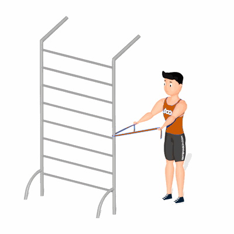

Remada Paralela com Faixa Elástico

O exercício trabalha o fortalecimento e estabilidade escapular.
Ficha Técnica
Tipo: Pilates
Grupo Muscular: Ombro
Aparelho: Nenhum
Músculos: Nenhum
Como realizar
- Passe a faixa elástica em um apoio;
- Segurando a faixa elástica com os braços estendidos a frente, puxe o elástico em direção ao quadril;
- Retorne a posição inicial e repita os movimentos.
 RC STORE
RC STORE